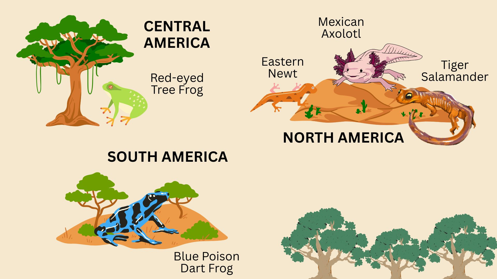

AMPHIBIANS
Amphibians are cold-blooded vertebrates that typically live both in water and on land during different stages of their life cycle. They usually begin life as aquatic larvae with gills and then metamorphose into air-breathing adults with lungs. Examples include frogs, salamanders, newts, and toads.
Amphibians have moist skin that aids in respiration and requires them to live in or near wet environments. They are sensitive indicators of environmental health due to their permeable skin and life cycle that spans aquatic and terrestrial habitats. Many amphibians are known for their distinctive calls and remarkable regenerative abilities.
